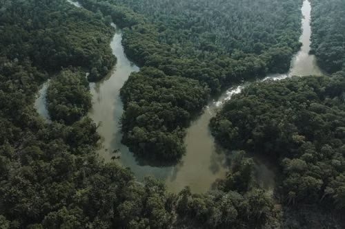
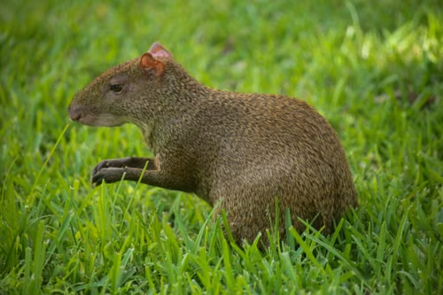
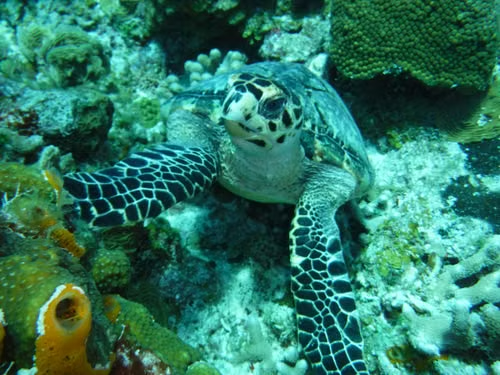
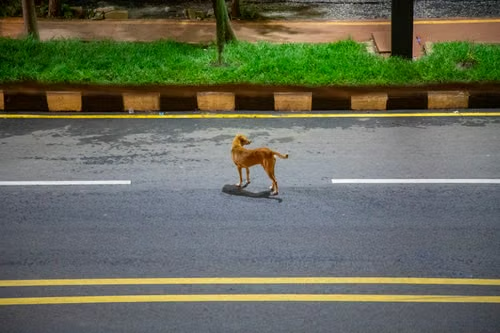
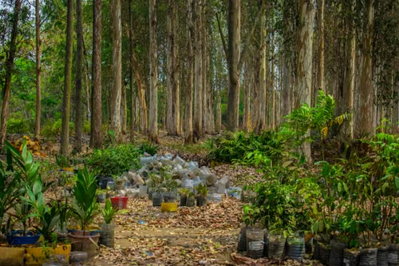
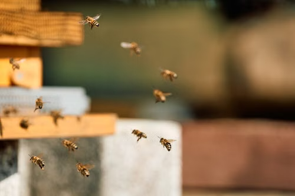
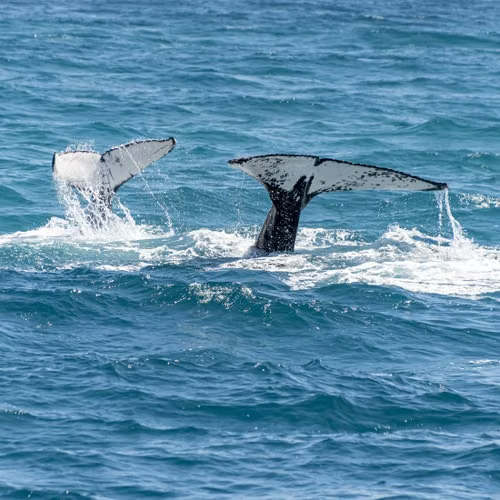
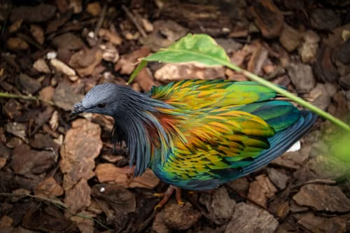
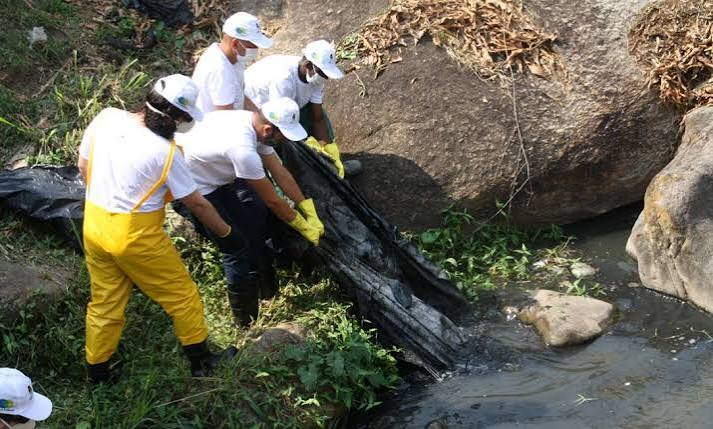
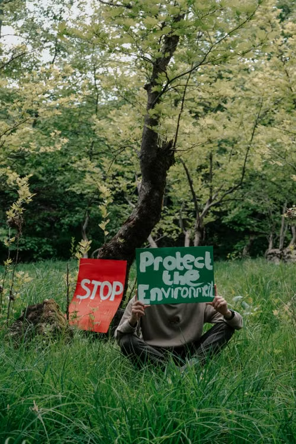

Queda no desmatamento reduz a pressão sobre a Amazônia

Projetos de conservação ajudam animais ameaçados a voltar à natureza

Aumento de ninhos mostra avanço na proteção das tartarugas marinhas

Pontes ecológicas reduzem o risco de atropelamentos de animais

Projetos de reflorestamento recuperam áreas degradadas da Amazônia

"Jardins e áreas naturais criam novos espaços para a
conservação das abelhas e da biodiversidade."

" Retorno dos animais a regiões onde sua presença havia
diminuído representa um resultado positivo para a
conservação marinha."

" Iniciativas de reprodução e reintrodução criam novas
oportunidades para espécies em risco."

"Moradores de diferentes comunidades estão participando de projetos de limpeza para recuperar rios e praias afetados pelo acúmulo de lixo."

"A criação de novas áreas protegidas representa uma oportunidade para preservar ambientes naturais e ampliar os espaços destinados à conservação da biodiversidade.."